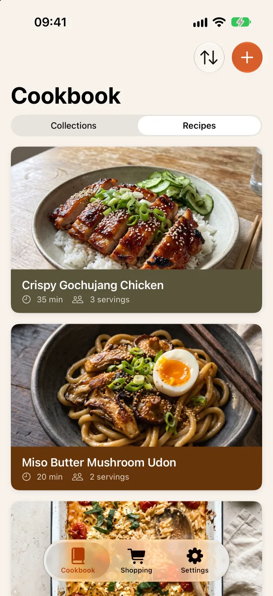
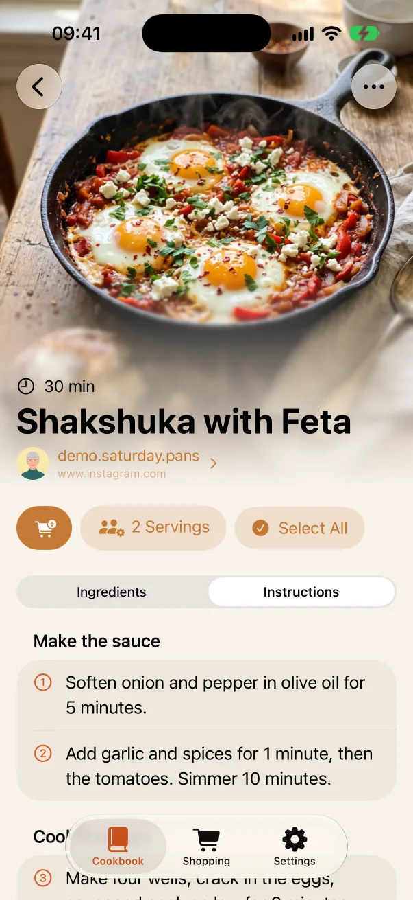
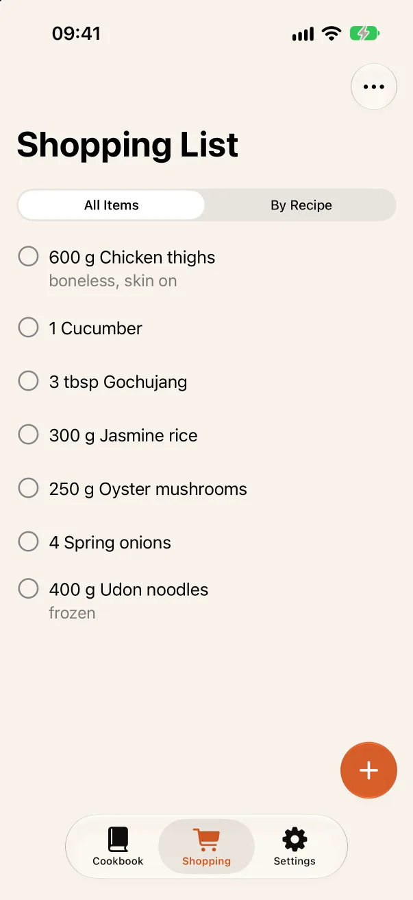

JanHoffmann

iOS and full-stack developer at CHECK24 in Münster. Two of my own apps are in beta, and you can see both working on this page without TestFlight.
The phone shows MyReciPal. The 3 in the dark bar at the top opens ReviewRadar.
Looking for a full-remote role in frontend-leaning full stack or iOS, on CET.




MyReciPal
A recipe app for iPhone. It saves recipes from TikTok, Instagram and any website, and turns the ingredients into a shopping list with one tap.
ReviewRadar
A menu bar app for the Mac that shows the pull requests waiting on me, across GitHub, Bitbucket and Jira.
- Sorts my PRs into Ready to Merge and Needs Work, with build state, approvals, open tasks and new comments.
- Suggests reviewers from local git history and how many reviews each person already has open.
- Summarises the linked Jira ticket on the Mac, with Apple's on-device model.
- Sends a notification for a new review request and when a PR is ready to merge.
The screens show sample data from the app's preview mode. Built in Swift and SwiftUI for macOS 26.6.